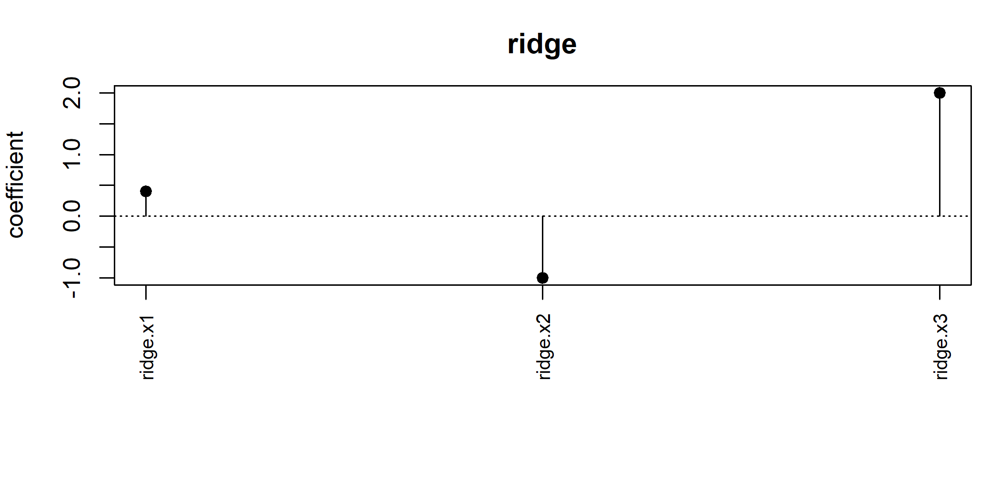

library(modelterms7)
dd <- data.frame(x = rnorm(8), g = factor(rep(c("a", "b", "c", "d"), 2)))
spec <- linpar(~ x + g)
built <- term_build(spec, dd)
term_coef_names(built)
#> [1] "(Intercept)" "x" "gb" "gc" "gd"
# a subset that loses two levels keeps the encoding of build time
sub <- droplevels(dd[dd$g %in% c("a", "b"), ])
dim(term_predict(built, sub))
#> [1] 4 58 The modelterms7 package
The chapters so far built the components a regression model consumes: links, distributions, optimizers, constrained parameters, bases and penalties. modelterms7 is the layer that lets a formula name them. A model term is the recipe a formula entry stands for: the mapping from a data frame to a block of the design matrix, the penalty attached to that block’s coefficients, and the metadata a fit reads – coefficient names, hyperparameters with their links, whether the penalized objective is differentiable in the coefficients, and how effective degrees of freedom are counted.
Section 8.1 presents the contract: the term as a specification, the built term with its design block and its blueprint, and the generics a consumer calls. Section 8.2 presents the terms the package ships – the parametric block, the four penalized blocks, grouped random effects, the penalized smooths of one and several covariates, the nonlinear parametric term whose block is a Jacobian, the two dynamic terms that rewrite the likelihood rather than adding to it, and the censored response. Section 8.3 presents the formula interpreter, whose recognition rule is what makes user-defined terms work without registration. Section 8.4 presents the effective degrees of freedom and the displays a fitted term offers, and Section 8.5 closes the chapter with the main functions used together.
8.1 The term contract
A term has two states. As written in a formula it is a specification: the object ridge(R) returns records what was asked and holds no design matrix. term_build(spec, data) returns the built term, a copy of the specification carrying the \(n \times k\) design block, the \(k\) coefficient names, the penalty over those coefficients (or NULL for an unpenalized term), and a blueprint. The blueprint is the part of the contract that concerns new data: it records whatever reapplying the mapping requires – the terms object, the factor levels, the contrasts, and later knots or centering constants – so that term_predict(built, newdata) reproduces the mapping exactly instead of re-deriving it from the rows it happens to receive. A factor level absent from the new data is encoded against the levels recorded at build time, and a level the blueprint has never seen is rejected.
A consumer reads a built term through a small set of generics: term_matrix() for the block, term_npar() and term_coef_names() for its size and labels, term_penalty() for the penalty object, and term_predict() for the block on new data. One flag deserves its own statement. term_smooth() says whether the term’s contribution to the penalized objective is differentiable in the coefficients, and the answer is read from the penalty rather than declared by the term: an unpenalized term is smooth, and a penalized one is smooth exactly when its penalty’s kink set (Chapter 7) is empty. The model layer uses this flag to split the coefficient vector into the block the optimizers of Chapter 4 handle on the unconstrained scale and the block that needs non-smooth strategies, and deriving it from the kink set means a term cannot disagree with its own penalty.
check_term() validates a term against a data frame: that it builds, that the block’s dimensions, names and count agree, that prediction on the same data reproduces the block exactly, and that prediction on a subset of rows equals the corresponding rows. The subset is chosen to drop a factor level whenever the data carry one, and the dropped level is what gives the check its power: a term that re-derives the encoding from the new data instead of reusing its blueprint loses a column there, while a subset that keeps every level would leave the defect invisible.
8.2 The terms
8.2.1 The parametric block
linpar() is the unpenalized block: the design matrix of a one-sided formula with the usual model.matrix() conventions for factors, contrasts, interactions and the intercept. The formula interpreter of Section 8.3 collects the bare covariates of a model formula into one term of this kind, so the default model is exactly a GLM design matrix; the explicit constructor exists for callers who want several parametric blocks with distinct labels.
8.2.2 The penalized blocks
ridge(), lasso(), scad() and mcp() take their block as a one-sided formula or as a numeric matrix, and differ only in the penalties7 object they attach to its coefficients at build time: ridge_penalty(), lasso_penalty(), scad_penalty() and mcp_penalty() of Chapter 7. The term adds no mathematics of its own. The hyperparameters, their bounds and links, every derivative in the coefficients and the hyperparameters, the mixed block and the kink set are the penalty object’s, so the lasso term’s hyperparameter is the rate \(\lambda\) of the Laplace prior and the SCAD term carries \((\lambda, a)\) with the bounds the penalty declares.
dd <- data.frame(x1 = rnorm(20), x2 = rnorm(20), x3 = rnorm(20))
bl <- term_build(lasso(~ x1 + x2 + x3), dd)
term_penalty(bl)@params
#> [1] "lambda"
c(lasso = term_smooth(bl),
ridge = term_smooth(term_build(ridge(~ x1 + x2), dd)))
#> lasso ridge
#> FALSE TRUEA formula input removes the intercept – a penalized block does not penalize an intercept, which lives in the parametric block – and keeps the blueprint discipline of Section 8.1. A matrix input is used as given, and prediction re-evaluates the expression that produced it in the new data alone, so the intended pattern is a matrix column of the model data frame: a subset of the data then carries the matching rows, while an expression that resolves only outside the new data is rejected rather than silently reusing the build-time rows.
8.2.3 Grouped random effects
random(~ 1 | g) builds one coefficient per level of the grouping factor, and random(~ x | g) one intercept and one slope per level, the bar’s left side being an ordinary one-sided formula for the within-group design with the usual intercept convention. The block interacts that design with the group indicators, ordered group by group, so with \(m\) groups and \(d\) within-group columns the coefficients of one group occupy \(d\) adjacent positions.
The distribution of the effects is the penalty on those coefficients, which is the penalized-likelihood reading of a random effect. By default the effects are Gaussian with one covariance shared by every group, carried as a precision through the structured penalty of Chapter 7 on the block-replicated parameter
\[ \Omega_{\mathrm{full}}(\eta) \;=\; I_m \otimes \Omega_d(\eta), \]
built by parameters7::kron_identity(): \(m\) identical diagonal blocks sharing one free vector, with every contract quantity a linear lift of the per-group parameter’s (\(\partial_k \Omega_{\mathrm{full}} = I_m
\otimes \partial_k \Omega_d\), \(\log\lvert \Omega_{\mathrm{full}}
\rvert = m \log\lvert \Omega_d \rvert\), blockwise solves). The per-group parameter is the unstructured log_cholesky(d) chart of Chapter 5 when correlated = TRUE, so intercepts and slopes may correlate, and diagonal_matrix(d) when correlated = FALSE; a precision argument replaces either with any parameters7 matrix parameter of dimension \(d\). With distrib, a univariate distributions7 object holding its own location is applied coordinatewise instead, which gives joint-mode estimation of the effects; integrating them out is a different computation and is not provided here.
dd$g <- factor(rep(letters[1:4], 5))
br <- term_build(random(~ x1 | g), dd)
term_coef_names(br)
#> [1] "random.a.(Intercept)" "random.a.x1" "random.b.(Intercept)"
#> [4] "random.b.x1" "random.c.(Intercept)" "random.c.x1"
#> [7] "random.d.(Intercept)" "random.d.x1"
term_penalty(br)@params
#> [1] "log_L1" "log_L2" "L2.1"8.2.4 Smooth terms
s(x) expands a covariate in a basis7 basis and penalizes it for roughness. The default construction is the Demmler-Reinsch reparametrization of Chapter 6 applied to a cubic B-spline basis, and what it buys is a decomposition: the transform makes the reparametrized functions empirically orthogonal to a constant and to \(x\), and carries the roughness penalty onto the identity. The block is therefore one column for the linear effect followed by the deviation from it, and the penalty is
\[ P \;=\; \operatorname{diag}(0, 1, \dots, 1), \]
rank deficient by exactly one. The linear effect is unpenalized and the deviation is shrunk towards zero, so as the smoothing parameter grows the fit approaches a straight line rather than a constant, and the effective degrees of freedom of Section 8.4 fall towards one.
set.seed(11)
dd <- data.frame(x = sort(runif(120)))
dd$y <- sin(2 * pi * dd$x) + rnorm(120, sd = 0.2)
bs <- term_build(s(x, k = 10), dd)
H <- crossprod(term_matrix(bs))
sapply(c(1e-8, 1, 1e8), function(lam)
edf(bs, coef = rep(0, term_npar(bs)), hessian = H,
theta = list(lambda = lam)))
#> [1] 8.999999 4.936039 1.000001The three values are the number of columns in the block, an intermediate fit, and one: the count of a straight line, which is what an unpenalized linear column inside a penalized block means. The columns are one fewer than the basis dimension asked for, the reparametrization having spent the constant and the linear direction on the constraints that separate them.
te(x, z) is the tensor-product smooth of several covariates, built on tensor_basis(). Its penalty is the sum of the marginal roughness penalties carried into the product,
\[ P_v \;=\; I \otimes \cdots \otimes P_v \otimes \cdots \otimes I, \]
each penalizing curvature in one direction. By default those components keep a smoothing parameter each, through the additive penalty of Section 7.2, so the surface may be rough in one direction and smooth in another; with anisotropic = FALSE they are summed first and one parameter governs the total.
d2 <- data.frame(x = runif(150), z = runif(150))
bt <- term_build(te(x, z, k = 4), d2)
term_penalty(bt)@params
#> [1] "lambda1" "lambda2"Anisotropy is the usual reason for fitting a tensor smooth rather than an isotropic one, and it is what the second parameter buys: a surface whose curvature in \(x\) is penalized separately from its curvature in \(z\).
Both take a by argument. With a factor the term carries one copy per level, the block being the smooth multiplied by each level’s indicator and the penalty the same matrix repeated blockwise, so one smoothing parameter governs every level. With a numeric the term is a varying-coefficient one: the smooth multiplies that variable, and the function being estimated is the coefficient of by as it changes with the covariate.
8.2.5 Score-driven dynamics
gas(p, q) is the first term of the structural branch, and it produces no block at all. It adds a level \(f_t\) to the linear predictor, driven by the score of the observation density at the previous times,
\[ f_t \;=\; \omega + \sum_{i=1}^{p} a_i\, s_{t-i} + \sum_{j=1}^{q} b_j\, f_{t-j}, \qquad s_t = \frac{\partial \ell_t}{\partial \eta_t}, \]
the recursion of Creal, Koopman, and Lucas (2013) and Harvey (2013). The predictor at one time depends on the data at the previous ones, so the contribution cannot be written as columns and term_filter() runs the recursion instead. What drives it is the score of whatever distribution the model carries, which is why one term covers several familiar models: entering the scale of a Gaussian it is a volatility model of the GARCH kind, entering the mean of a Poisson a dynamic count model, and entering a Student t a robust filter, the heavy-tailed score being bounded in the observation so that an outlier moves the level by a bounded amount rather than in proportion to its size.
The filter returns the derivative of the predictor with respect to the term’s parameters alongside the predictor itself. That is not a convenience: the recursion is the only place the derivative can be computed, since each state depends on the previous one, and a model layer differencing the filter would pay a pass per parameter and inherit the error of the difference.
The persistence is carried by partial autocorrelations rather than by the coefficients \(b_j\), for the reason Chapter 5 gives for an autoregressive covariance: the stationary region of an autoregression is not a box, so no collection of scalar links covers it, while the partial autocorrelations each range over \((-1, 1)\) independently and the Levinson-Durbin recursion carries them onto the coefficients bijectively. The coordinate is named for the chart it lives on.
set.seed(8)
ts_dd <- data.frame(t = 1:80, y = as.numeric(arima.sim(list(ar = 0.7), 80)))
gt <- term_build(gas(p = 1, q = 1, time = t), ts_dd)
term_params(gt)
#> [1] "omega" "a1" "pacf1"
out <- term_filter(gt, eta = rep(0, 80), y = ts_dd$y,
score = function(e, i) ts_dd$y[i] - e,
curvature = function(e, i) -1,
psi = list(omega = 0.1, a1 = 0.4, pacf1 = 0.6))
c(predictor = length(out$eta), jacobian = ncol(out$jacobian))
#> predictor jacobian
#> 80 38.2.6 Nonlinear parametric terms
nl() carries a contribution \(f(x;\theta)\) that is nonlinear in its own parameters. It is not a branch of its own, and the reason is worth stating: while \(f\) is differentiable the contribution is linearized as
\[ f(x;\theta(\beta)) \;\approx\; f(x;\theta(\beta_0)) + J(\beta_0)\,(\beta - \beta_0), \qquad J = \frac{\partial f}{\partial \beta}, \]
so the design block is the Jacobian and the term is an ordinary additive one at every point. What distinguishes it is only that the block moves with the parameters: term_refresh() recomputes it, and term_value() reports \(f\) itself, which the Jacobian does not give and a Gauss-Newton step needs beside it.
set.seed(13)
nd <- data.frame(x = seq(0, 3, length.out = 60))
nd$y <- 2 * exp(-1.3 * nd$x) + rnorm(60, sd = 0.05)
bn <- term_build(nl(~ a * exp(-r * x), start = list(a = 1, r = 0.5)), nd)
b <- c(1, 0.5)
for (it in 1:25) {
cur <- term_refresh(bn, b)
J <- term_matrix(cur)
b <- b + solve(crossprod(J) + 1e-10 * diag(2),
crossprod(J, nd$y - term_value(cur)))
}
round(as.numeric(b), 3)
#> [1] 2.041 1.333The function may be given as a formula or as a function of the covariates and the parameters, and the two do not reach equally far. A formula is read symbolically: the names it uses that the data do not supply are the parameters, and the derivatives come from deriv() where that manages the expression and from a central difference where it does not. An opaque function is always differenced. More than that, a parameter can be given a link, and developed with covariates as \(\theta_j = g_j^{-1}(Z\gamma_j)\), only on the formula route: substituting inside \(f\) requires knowing where the parameter enters, which a formula says and a function does not.
8.2.7 Markov regimes
regime(k) is the other dynamic term, and it is the complement of the first: a score-driven level moves continuously, while a regime chain moves in jumps between a finite number of states. A latent Markov chain visits \(K\) regimes, each shifting the predictor by a level of its own, and the likelihood is the mixture over the unobserved path, evaluated by the forward recursion
\[ \tilde\alpha_t(j) \;=\; f_j(t) \sum_i \alpha_{t-1}(i)\, P_{ij}, \qquad c_t = \sum_j \tilde\alpha_t(j), \qquad \alpha_t = \tilde\alpha_t / c_t, \]
started at the chain’s stationary distribution, with \(\log L = \sum_t \log c_t\). Here \(f_j(t)\) is the density of observation \(t\) at the predictor shifted by the level of regime \(j\) — whatever density the model carries, which is why the term is not tied to any family.
The normalization at each step is not a refinement. The unnormalized quantities are products of \(t\) densities, so they decay geometrically: on the series below they are of order \(10^{-142}\) by the two hundredth observation and exactly zero in double precision before the five hundredth, while the normalized recursion is unaffected.
The contribution of this term is a likelihood and not a predictor, so it cannot be reported through term_filter(); term_loglik() is the second shape of the structural branch, returning the contributions \(\log c_t\) with their exact derivatives.
set.seed(4)
m <- 400
P <- matrix(c(0.95, 0.05, 0.08, 0.92), 2, 2, byrow = TRUE)
state <- integer(m); state[1] <- 1L
for (t in 2:m) state[t] <- sample(1:2, 1, prob = P[state[t - 1], ])
yy <- rnorm(m, c(0, 4)[state])
rd <- data.frame(t = seq_len(m), y = yy)
rt <- term_build(regime(2, time = t), rd)
nll <- function(v) {
-sum(term_loglik(rt, rep(0, m), yy,
logdens = function(e, i) dnorm(yy[i], e, log = TRUE),
score = function(e, i) yy[i] - e,
psi = list(level1 = v[1], gap2 = exp(v[2]),
alr1.1 = v[3], alr2.1 = v[4]))$loglik)
}
fit <- optim(c(0.5, log(2), 2, -2), nll, method = "BFGS")
round(c(level1 = fit$par[1], level2 = fit$par[1] + exp(fit$par[2])), 2)
#> level1 level2
#> -0.14 3.89The levels are ordered by construction: the first is free and each of the others is the previous one plus a positive gap on a log link. Without an ordering the regimes are exchangeable, and the likelihood has \(K!\) identical maxima — a problem that is no harder to fit and whose answer cannot be reported. The transition matrix is the row-wise simplex chart of Chapter 5, so every row is a probability vector at every value of the free coordinates.
8.2.8 The censored response
cens(y, lwr = , upr = ) marks a response as censored on the left-hand side of a model formula. The bounds recycle to the length of the response, and the status of each observation follows from the values: at or below the lower bound the observation is left-censored, at or above the upper bound right-censored, strictly inside observed, and an NA value with two finite bounds interval-censored. The object carries the values, the bounds and the statuses; the likelihood assembler of the model layer consumes it, contributing a density where the observation is exact and a difference of distribution functions – through the cdf derivatives of Chapter 3 – where it is censored.
r <- cens(c(0, 0.7, 2.4, NA), lwr = 0, upr = c(5, 5, 5, 4))
r@status
#> [1] "left" "observed" "observed" "interval"8.3 The formula interpreter
interpret_formula(formula, data) splits a model formula into a response specification and a list of term specifications. Its recognition rule is by evaluation, not by name: each call on the right-hand side is evaluated in the data, and it becomes a term of its own exactly when its value inherits from model_term. log(x) evaluates to a numeric vector and stays a covariate; poly(x, 2) evaluates to a matrix and stays a covariate; lasso(L) evaluates to a term specification and is routed as one. Bare symbols and interaction labels are never evaluated directly – x1:x2 parses as a call to the sequence operator, which on numeric vectors returns something unrelated to a model matrix column – and flow, together with every unrecognized entry, into one collected linpar() block with the formula’s own intercept convention.
The consequence of recognizing by value is that the interpreter carries no list of special names: a term class defined outside the package works in a formula the day it is written. The demonstration below defines a minimal term inline and uses it next to the shipped ones.
MatTerm <- S7::new_class("MatTerm", parent = additive_term, package = NULL,
properties = list(mat = S7::class_any))
mat_term <- function(m) {
MatTerm(label = "mat", mat = as.matrix(m), X = NULL,
coef_names = character(0), blueprint = list(), penalty = NULL)
}
S7::method(term_build, MatTerm) <- function(term, data, ...) {
X <- term@mat
colnames(X) <- paste(term@label, seq_len(ncol(X)), sep = ".")
term@X <- X
term@coef_names <- colnames(X)
term@blueprint <- list(ncol = ncol(X))
term
}
set.seed(4)
dd <- data.frame(y = rnorm(12), x1 = rnorm(12), x2 = runif(12),
g = factor(rep(letters[1:3], 4)))
dd$L <- matrix(rnorm(24), 12, 2)
out <- interpret_formula(y ~ x1 + log(x2) + lasso(L) + mat_term(dd$L) +
random(~ 1 | g), dd)
names(out$terms)
#> [1] "linpar" "lasso(L)" "mat_term(dd$L)" "random(~1 | g)"The left-hand side, when present, is evaluated in the data as well: a plain expression gives the numeric response and a response constructor such as cens() gives its object. The intercept belongs to the collected parametric block, so a formula whose right-hand side holds only special terms still produces an intercept-only linpar() and - 1 removes it.
names(interpret_formula(y ~ lasso(L), dd)$terms)
#> [1] "linpar" "lasso(L)"
names(interpret_formula(y ~ lasso(L) - 1, dd)$terms)
#> [1] "lasso(L)"8.4 Degrees of freedom and the fitted views
The effective degrees of freedom of a term follow from its penalty, and edf() implements one counting rule per case. An unpenalized term counts its coefficients exactly. A term with a smooth penalty uses the trace of the penalized smoother restricted to its block,
\[ \mathrm{edf} \;=\; \operatorname{tr}\!\big[(H + S(\hat\theta))^{-1} H\big], \]
where \(H\) is the term’s unpenalized curvature at the fit – the weighted crossproduct of its design block – and \(S(\hat\theta)\) the penalty’s Hessian in the coefficients at the estimated hyperparameters. Without a penalty the trace reduces to the coefficient count, and as the penalty grows it falls toward the dimension of the penalty’s null space, which is the standard smoother reading (Wood 2017). A term with a non-smooth penalty counts its nonzero coefficients, which for the lasso is an unbiased estimator of its degrees of freedom (Zou, Hastie, and Tibshirani 2007).
The method takes the fit pieces as arguments because no term can know its edf without them; what the term contributes is the rule, and the choice of rule is derived from the penalty exactly as term_smooth() is.
set.seed(9)
dd <- data.frame(x1 = rnorm(40), x2 = rnorm(40), x3 = rnorm(40))
br <- term_build(ridge(~ x1 + x2 + x3), dd)
H <- crossprod(term_matrix(br))
beta <- c(0.4, -1, 2)
sapply(c(0.05, 0.5, 5, 500), function(sigma)
edf(br, coef = beta, hessian = H, theta = list(sigma = sigma)))
#> [1] 0.241767 2.683580 2.996452 3.000000The sweep shows the two limits: a hard penalty removes the block and a vanishing one recovers the count of three. For the non-smooth terms the count is the support:
bl <- term_build(lasso(~ x1 + x2 + x3), dd)
edf(bl, coef = c(0.8, 0, -0.3))
#> [1] 2A built term also displays itself. print() names the class, the label and the block, and for a penalized term the penalty and its hyperparameters; plot() draws the term at supplied coefficients, one needle per coefficient with its name, which is the fitted-point view a model summary composes term by term.
plot(br, coef = beta)
8.5 In practice
The functions above compose into the workflow the model layer will run: interpret a formula, build every term, and read the blocks, penalties and flags off the built objects. The formula below is the shape statmod() will take – a censored response, bare covariates, a penalized block and grouped random effects, all in one right-hand side.
set.seed(12)
n <- 60
dd <- data.frame(x1 = rnorm(n), x2 = runif(n),
id = factor(sample(letters[1:6], n, TRUE)))
dd$L <- matrix(rnorm(n * 4), n, 4)
dd$y <- pmax(0, 1 + 0.5 * dd$x1 + rnorm(n))
out <- interpret_formula(cens(y, lwr = 0) ~ x1 + log(x2) + lasso(L) +
random(~ x1 | id), dd)
out$response@status[1:8]
#> [1] "observed" "observed" "observed" "left" "observed" "left" "left"
#> [8] "observed"
names(out$terms)
#> [1] "linpar" "lasso(L)" "random(~x1 | id)"Building every term gives the blocks a fit assembles, and each built term reports its size, its smoothness and its hyperparameters:
built <- lapply(out$terms, term_build, data = dd)
data.frame(
npar = sapply(built, term_npar),
smooth = sapply(built, term_smooth),
theta = sapply(built, function(b) {
p <- term_penalty(b)
if (is.null(p)) "" else paste(p@params, collapse = ", ")
})
)
#> npar smooth theta
#> linpar 3 TRUE
#> lasso(L) 4 FALSE lambda
#> random(~x1 | id) 12 TRUE log_L1, log_L2, L2.1check_term() runs the structural battery of Section 8.1 on each specification, and every shipped term passes it on these data:
sapply(out$terms, function(sp)
all(check_term(sp, dd, verbose = FALSE)$status == "OK"))
#> linpar lasso(L) random(~x1 | id)
#> TRUE TRUE TRUEPrediction reapplies each blueprint: the rows of a subset reproduce the corresponding rows of every block, factor encodings included, which is what makes fitted values on new data trustworthy before any fitting exists.
idx <- c(3, 17, 41)
all(vapply(built, function(b)
isTRUE(all.equal(unname(term_predict(b, dd[idx, , drop = FALSE])),
unname(term_matrix(b)[idx, , drop = FALSE]),
tolerance = 1e-12, check.attributes = FALSE)),
logical(1)))
#> [1] TRUE